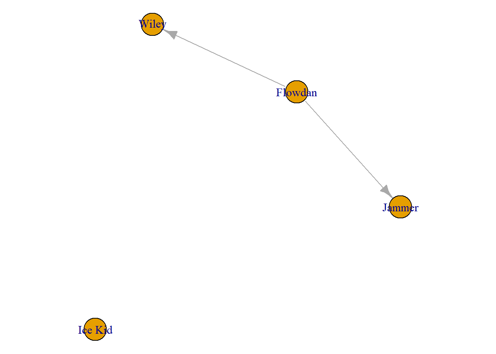
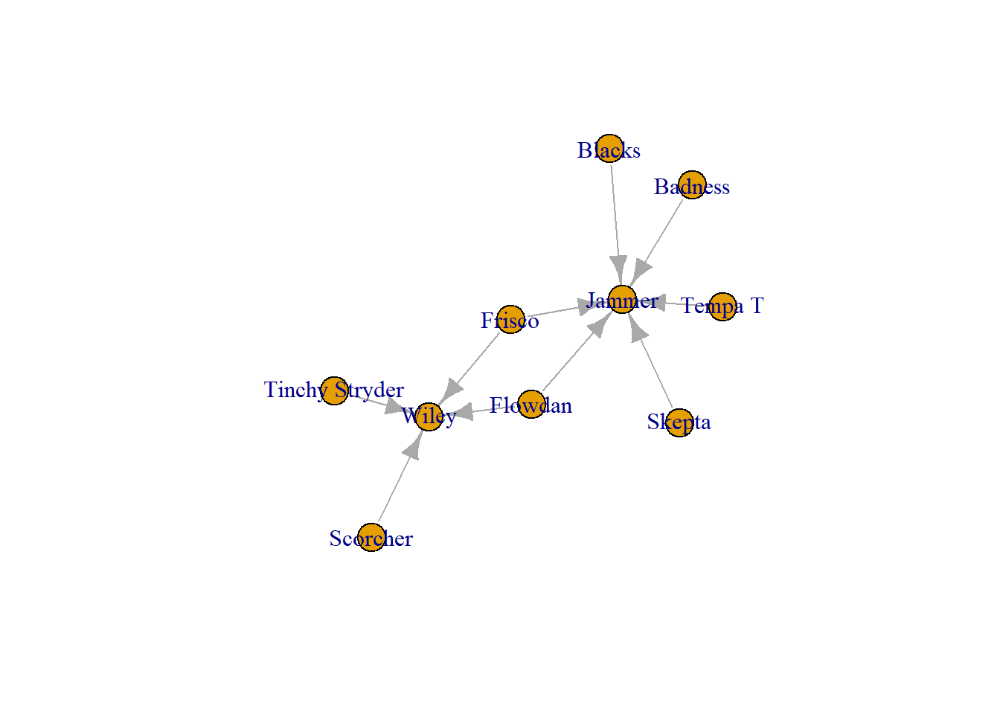

library(igraph)5 Cleaning Network Data - Subgraphs
Bringing in the data and cleaning out the self loops.
grime_edge_list <- read.csv(file.choose(), header = TRUE)
grime_08 <- graph_from_data_frame(d= grime_edge_list, directed = TRUE)grime_08_clean <- delete_edges(grime_08, E(grime_08)[which_loop(grime_08)])You may want to create subgraphs of the network that you have. There are two basic ways that you can think about this. You may be interested in a specific group of people and how they relate to each other, or you may be interested in a specific person and find out who they are connected to.
5.1 Specific Subgraphs
First, a subgraph to see a specific set of people and how/whether they are connected
You may have a list of individual nodes that you are interested in and you want to see how they related to each other. You can do this by creating a vector with the names of thise nodes, then use the subgraph function().
sub_people <- c('Wiley', 'Jammer', 'Flowdan', 'Ice Kid')
sub_net <- subgraph(grime_08_clean, sub_people)
par(mar = c(0,0,0,0))
plot(sub_net)
5.2 Ego Graphs
Next, you may want to see ego networks from those in your network. In other words, smaller networks showing only the connections of each individual artist. To do this, you can use the make_ego_graph() argument. This creates a list of ego graphs from your entire network. Note, the order = 1 argument refers to the number of steps away from the ego (focal node). Since mine is set to 1, this only caputres the ego’s immidiate neighbours (i.e. only those directly connected to ego).
ego_graphs <- make_ego_graph(grime_08_clean, order = 1)
head(ego_graphs)[[1]]
IGRAPH 8dd6749 DN-- 2 1 --
+ attr: name (v/c), collab_weight (e/n)
+ edge from 8dd6749 (vertex names):
[1] Asher D->Wiley
[[2]]
IGRAPH 8dd6767 DN-- 1 0 --
+ attr: name (v/c), collab_weight (e/n)
+ edges from 8dd6767 (vertex names):
[[3]]
IGRAPH 8dd6778 DN-- 1 0 --
+ attr: name (v/c), collab_weight (e/n)
+ edges from 8dd6778 (vertex names):
[[4]]
IGRAPH 8dd6785 DN-- 2 1 --
+ attr: name (v/c), collab_weight (e/n)
+ edge from 8dd6785 (vertex names):
[1] Scorcher->Wiley
[[5]]
IGRAPH 8dd6794 DN-- 3 2 --
+ attr: name (v/c), collab_weight (e/n)
+ edges from 8dd6794 (vertex names):
[1] Bless Beats->Wiley Bless Beats->Roll Deep
[[6]]
IGRAPH 8dd67a4 DN-- 3 2 --
+ attr: name (v/c), collab_weight (e/n)
+ edges from 8dd67a4 (vertex names):
[1] Flowdan->Wiley Flowdan->JammerYou can also specify exactly which node’s network you want to see. Let’s say there was a person of interest in your network that you specifically want to see. To do this, you can do the folliwing using the node’s name to single them out.
This chunk returns a lsit of edges connected to Wiley (the name of my node of interest).
E(grime_08_clean)[[.inc('Wiley')]]+ 8/28 edges from 8dc6211 (vertex names):
tail head tid hid collab_weight
1 Asher D Wiley 1 29 1
2 Scorcher Wiley 4 29 4
3 Bless Beats Wiley 5 29 1
4 Flowdan Wiley 6 29 3
5 Tinchy Stryder Wiley 7 29 2
6 Frisco Wiley 8 29 1
7 Kano Wiley 9 29 1
27 Wiley Lauren Mason 29 39 1I can also plot these. To do so, I make an object with the name ‘Wiley’ and then make an ego graph based on that name only. The [[1]] simply tells R to get only the first one in the list that make_ego_graph() creates. In this case, Wiley.
Wiley <- "Wiley"
ego_wiley <- make_ego_graph(grime_08_clean, order = 1, nodes = Wiley)[[1]]
par(mar = c(0,0,0,0))
plot(ego_wiley)You can also select an ego network with more information. The second order ego network includes the connections of Wiley’s neighbours.
second_order_wiley <- make_ego_graph(grime_08_clean, order = 2, nodes = Wiley)[[1]]
par(mar = c(0,0,0,0))
plot(second_order_wiley)Pro tip: If you are working with ego networks like this, especially when you get passed the first order network (including friends of friends) it is good practice to do something to differentiate the ego from their neighbours. Once simple way it to change their colour.
V(second_order_wiley)$ego <- ifelse(V(second_order_wiley)$name %in% c("Wiley"), "red", "white")
par(mar = c(0,0,3,0))
plot(second_order_wiley, vertex.color = V(second_order_wiley)$ego, main = "Wiley's Second Order Ego Network")Finally, one other way to can subset a network is by a set parameter you may have. For example, you may want to see a network of frequent collaborators (more than 1 collab).
The following returns a vector with collaborators who work together more than once.
frequent_collabors <- E(grime_08_clean)[[collab_weight > 1]]
frequent_collabors+ 8/28 edges from 8dc6211 (vertex names):
tail head tid hid collab_weight
2 Scorcher Wiley 4 29 4
4 Flowdan Wiley 6 29 3
5 Tinchy Stryder Wiley 7 29 2
8 Blacks Jammer 12 35 4
9 Badness Jammer 13 35 5
11 Tempa T Jammer 15 35 2
14 Skepta Jammer 17 35 5
16 Frisco Jammer 8 35 3You can then turn this vector of edges into a igraph object to plot
frequent_collabors_graph <- induced_subgraph(grime_08_clean, vids = unique(c(ends(grime_08_clean, frequent_collabors)[, 1], ends(grime_08_clean, frequent_collabors)[, 2])))
plot(frequent_collabors_graph)